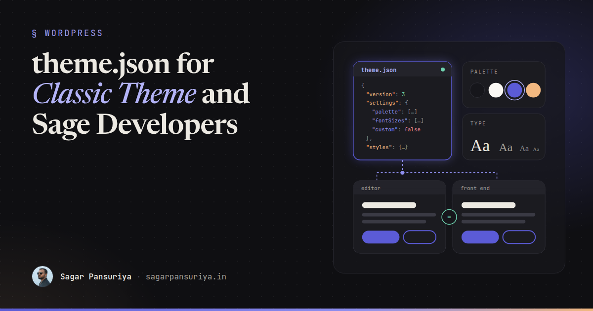
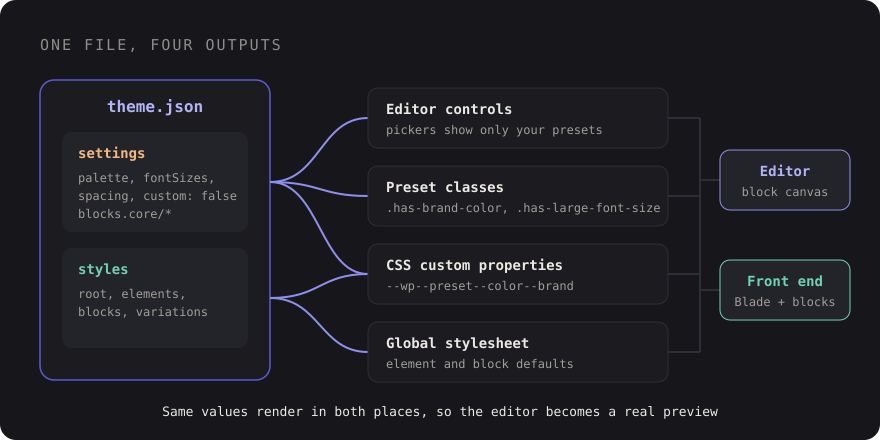

theme.json for Classic Theme and Sage Developers


You've probably inherited a classic theme, or a Sage theme you built yourself, where the front end looks exactly like the design and the block editor looks like a different website. The client picks a colour from a rainbow picker, sets a heading to 43px, adds a drop cap, and the page they preview in the editor bears no relation to the page that goes live.
For years we fixed this with a pile of add_theme_support() calls, an editor stylesheet and
some hope. Today the answer is one file: theme.json. It isn't only for block
themes. A classic or Sage theme can ship one too, and it's the cleanest way I know to make the editor
match the design and stop clients from wandering off-brand.
This post is for developers coming from PHP templates who keep hearing about theme.json but haven't sat down with it. What it controls, how to lock things down, how to feed it from your design tokens, and where block themes fit next to Sage.
What theme.json actually is
theme.json is a configuration file in the root of your theme that WordPress reads on every request. It has two main jobs, and it helps to keep them separate in your head:
settingsdecide what the editor offers: which colours appear in the palette, which font sizes exist, whether custom values are allowed, which design tools are switched on for which blocks.stylesdecide how things look by default: body text, links, headings, buttons, individual blocks.
From those two sections WordPress generates CSS for you. Every preset becomes a CSS custom property, every colour gets utility classes, and your default styles become a global stylesheet loaded in both the editor and the front end. That last part is the point: one definition, rendered in both places.

Here's a small but complete file. The version key matters: version 2 arrived with WordPress
5.9 and version 3 with 6.6. Use 3 for anything new; the $schema line gives you
autocompletion and validation in most editors.
{
"$schema": "https://schemas.wp.org/trunk/theme.json",
"version": 3,
"settings": {
"color": {
"palette": [
{ "slug": "ink", "name": "Ink", "color": "#16161b" },
{ "slug": "paper", "name": "Paper", "color": "#faf8f4" },
{ "slug": "brand", "name": "Brand", "color": "#5b5bd6" },
{ "slug": "accent", "name": "Accent", "color": "#f2b880" }
]
},
"typography": {
"fontSizes": [
{ "slug": "small", "name": "Small", "size": "0.875rem" },
{ "slug": "base", "name": "Base", "size": "1rem" },
{ "slug": "large", "name": "Large", "size": "1.5rem" },
{ "slug": "huge", "name": "Huge", "size": "2.5rem" }
]
},
"layout": { "contentSize": "720px", "wideSize": "1200px" }
},
"styles": {
"color": { "background": "var:preset|color|paper", "text": "var:preset|color|ink" },
"elements": {
"link": { "color": { "text": "var:preset|color|brand" } }
}
}
}The CSS it generates
This is the part that clicks for most classic-theme developers. Each preset turns into a custom property with a predictable name:
| Preset | Custom property | Classes |
|---|---|---|
Colour brand | --wp--preset--color--brand | .has-brand-color, .has-brand-background-color |
Font size large | --wp--preset--font-size--large | .has-large-font-size |
Font family body | --wp--preset--font-family--body | .has-body-font-family |
Spacing 40 | --wp--preset--spacing--40 | (used by block spacing controls) |
Inside theme.json you reference presets with the var:preset|color|brand shorthand, which
WordPress expands into the right var(). In your own CSS or Blade templates you can use the
custom properties directly, so a hand-built header and a block-built section pull from the same
values.
There's also settings.custom, a free-form object for values that aren't presets. Anything you
put there becomes --wp--custom--*. Nested keys are joined with double dashes, so
{ "radius": { "card": "12px" } } becomes --wp--custom--radius--card. Handy for
radii, shadows or transition timings you want in both places.
Locking down the editor for clients
This is where theme.json earns its keep on client sites. The default editor gives people a lot of rope. Most of it can be switched off with a handful of settings:
"settings": {
"color": {
"custom": false,
"customGradient": false,
"defaultPalette": false,
"defaultGradients": false,
"defaultDuotone": false
},
"typography": {
"customFontSize": false,
"dropCap": false
},
"spacing": {
"customSpacingSize": false,
"units": ["px", "rem", "%"]
}
}With that in place the colour picker only shows your brand palette, the font size control only offers your named sizes, and WordPress's own default colours disappear. Editors can still make choices, they just can't make off-brand choices.
You can go further per block. settings.blocks takes the same keys, scoped to one block type.
A common pattern is a tight global palette and a slightly different one for buttons:
"settings": {
"blocks": {
"core/button": {
"color": {
"palette": [
{ "slug": "brand", "name": "Brand", "color": "#5b5bd6" },
{ "slug": "accent", "name": "Accent", "color": "#f2b880" }
]
}
},
"core/heading": {
"typography": { "fontSizes": [] }
}
}
}One thing to watch: "appearanceTools": true is a shortcut that turns on a whole group
of controls (borders, link colours, spacing, line height and more). It's great for block themes and
often too generous for a locked-down client site. I'd rather enable the individual tools I need.
theme.json controls what design tools exist. It doesn't control which blocks exist. For that,
keep using the allowed_block_types_all filter, and use block locking or patterns for
structure. Together they cover most "please don't let them break the homepage" requests.
Feeding theme.json from your design tokens
If you already have tokens in Tailwind (I wrote about structuring tokens that survive a rebrand), the worst thing you can do is copy hex values into theme.json by hand. Two sources of truth will drift within a month.
Pick one direction and automate it. Recent Sage versions can generate theme.json from your Tailwind configuration as part of the build, so check the Sage docs on roots.io for the version you're on. If you're not on Sage, or you want full control, a tiny build script does the job:
// scripts/theme-json.mjs
import fs from 'node:fs';
const tokens = JSON.parse(fs.readFileSync('tokens.json', 'utf8'));
const theme = JSON.parse(fs.readFileSync('theme.base.json', 'utf8'));
theme.settings.color.palette = Object.entries(tokens.color).map(([slug, color]) => ({
slug,
name: slug.replace(/-/g, ' ').replace(/\b\w/g, c => c.toUpperCase()),
color,
}));
theme.settings.typography.fontSizes = Object.entries(tokens.fontSize).map(([slug, size]) => ({
slug, name: slug, size,
}));
fs.writeFileSync('theme.json', JSON.stringify(theme, null, 2) + '\n');Run it before your Vite build and commit the output. Now a token change updates Tailwind utilities, the editor palette and the preset variables in one go.
Going the other way also works: point Tailwind at the WordPress variables, so a class like
bg-brand resolves to var(--wp--preset--color--brand). I prefer generating
theme.json from tokens, because the tokens file stays readable and framework-neutral, but either is fine
as long as there's exactly one place where a colour is typed.
Styling elements and blocks
The styles section replaces a surprising amount of editor-style CSS. It has three levels:
root styles, elements (links, headings, buttons, captions) and blocks:
"styles": {
"typography": { "fontFamily": "var:preset|font-family|body", "lineHeight": "1.6" },
"elements": {
"heading": { "typography": { "fontFamily": "var:preset|font-family|display" } },
"button": {
"color": { "background": "var:preset|color|brand", "text": "var:preset|color|paper" },
"border": { "radius": "999px" }
}
},
"blocks": {
"core/quote": {
"border": { "left": { "color": "var:preset|color|accent", "width": "4px" } }
}
}
}Because these styles are loaded in the editor too, a quote block looks the same while editing as it does
live. No separate editor-style.css to keep in sync.
Block style variations
Block styles are the named options in the sidebar, like "Outline" on a button. You register one in PHP and style it from theme.json:
// functions.php, or a Sage/Acorn service provider
add_action('init', function () {
register_block_style('core/button', [
'name' => 'ghost',
'label' => __('Ghost', 'sage'),
]);
});"styles": {
"blocks": {
"core/button": {
"variations": {
"ghost": {
"color": { "background": "transparent", "text": "var:preset|color|brand" },
"border": { "color": "var:preset|color|brand", "width": "2px", "style": "solid" }
}
}
}
}
}This is my favourite way to give clients choice without giving them control. Three named button styles beat a colour picker every time.
Where block themes fit, and where Sage still wins
A block theme is a theme whose templates are block markup in HTML files (templates/ and
parts/), editable in the Site Editor. theme.json is its backbone. A classic or Sage theme uses
theme.json only for the editor and global styles, while templates stay in PHP or Blade.
| Block theme | Sage + theme.json | |
|---|---|---|
| Who edits layout | Site owners, in the Site Editor | Developers, in Blade |
| Templating | Block markup in HTML files | Blade components, PHP logic |
| Complex data and logic | Awkward, pushed into custom blocks | Natural: composers, Acorn, services |
| Version control of layout | Mixed: DB edits can override files | Everything in Git |
| Best for | Content-led sites the client runs | Product-like sites with real logic |
My rule of thumb: if the client wants to redesign headers and archive layouts themselves, a block theme is the honest choice. If the site has integrations, custom queries and a component library in Blade, stay on Sage and use theme.json for what it's great at: making the content editor match the design and keeping it on-brand.
A checklist for adding theme.json to a classic theme
- Add
theme.jsonwith"version": 3and the$schemaline. - Define palette, font sizes, font families and spacing as presets, generated from your tokens.
- Turn off custom colours, custom font sizes and the default WordPress palette.
- Enable design tools one by one instead of reaching for
appearanceTools. - Move editor-style CSS into
styles: root, elements, then blocks. - Offer choice through block style variations, not colour pickers.
- Remove old
add_theme_support()calls for palettes and font sizes that theme.json now covers, so there's only one definition. - Use
--wp--preset--*variables in your own templates so hand-built and block-built parts match.
None of this requires moving to a block theme. It's one JSON file, and it turns the editor from the place where designs go to die into a reasonably faithful preview of the real site.
Discussion